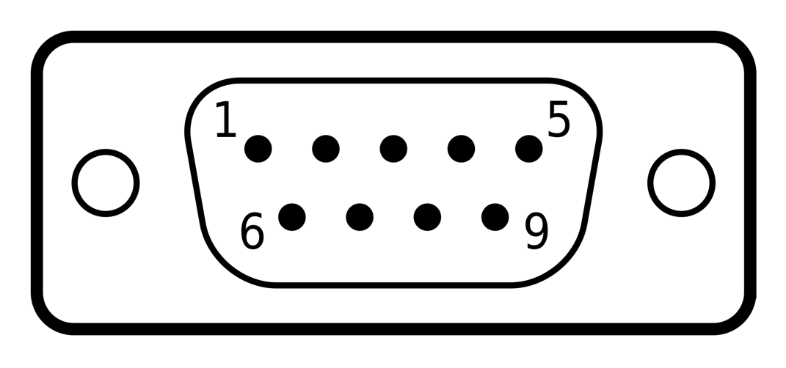
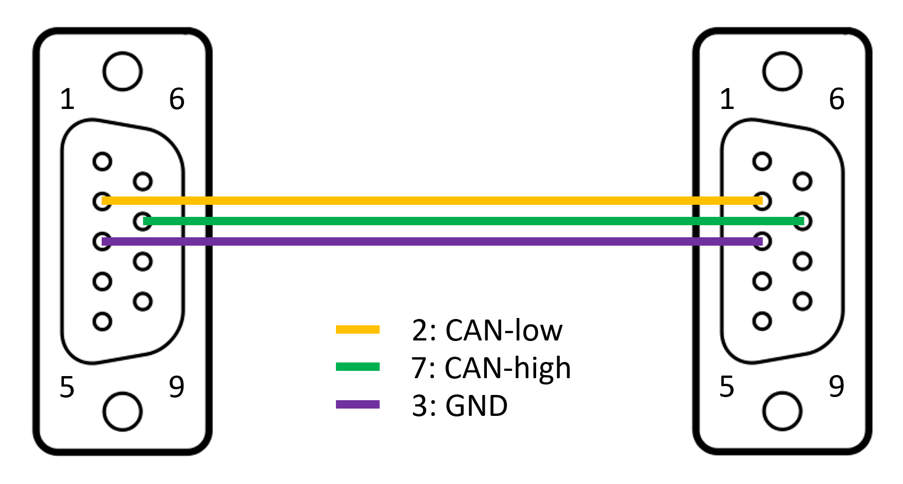
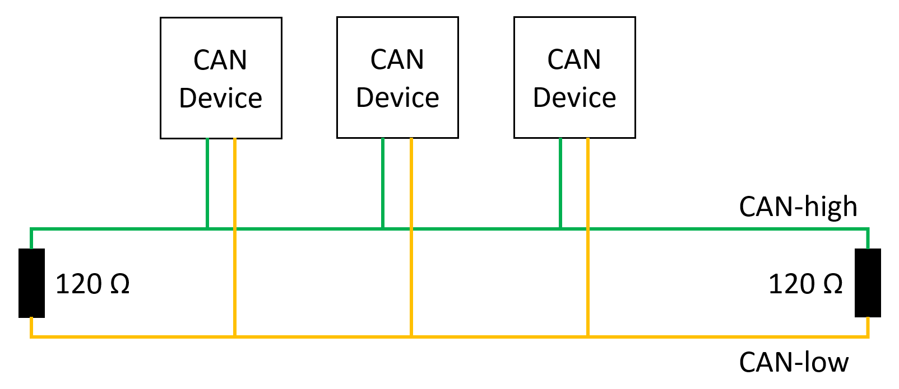

IO643/IO644 Pin Mapping — Reference information about the I/O module connector
The 9-pin Male D-Sub connector provides one isolated CANopen interface according to ISO 11898.

| Pin | DB9 Connector Signal |
|---|---|
| 1 | Do not connect! |
| 2 | CAN-low |
| 3 | GND |
| 4 | Do not connect! |
| 5 | Do not connect! |
| 6 | Do not connect! |
| 7 | CAN-high |
| 8 | Do not connect! |
| 9 | Do not connect! |
Use a standard CAN cable with female sockets to connect the I/O module with external CANopen devices. CANopen devices are connected in a line topology with each other (from A to B, B to C, and so on). As almost every CANopen device has only one connector, use Y split cables to connect multiple devices to the network.

For proper operation, a CANopen topology requires 120 ohm terminating resistors on both ends. The IO643 and IO644 I/O modules do not include termination resistors. Instead, Speedgoat provides standard termination adapters which can be inserted between the I/O module and the CAN cable. Termination resistors are not mandatory for very short distances.
